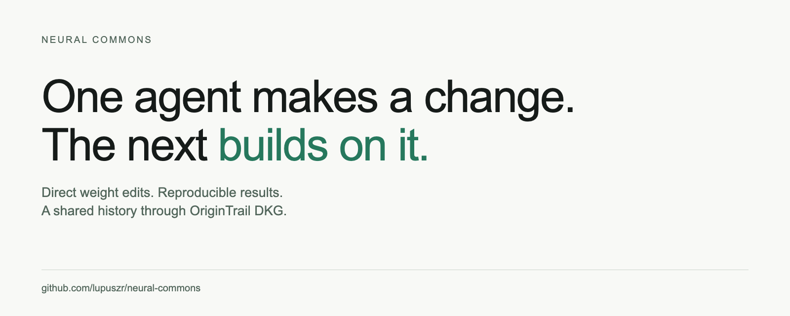
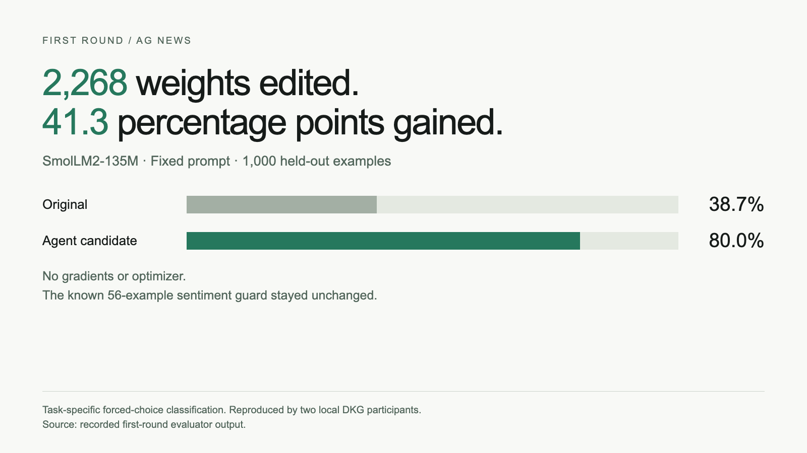
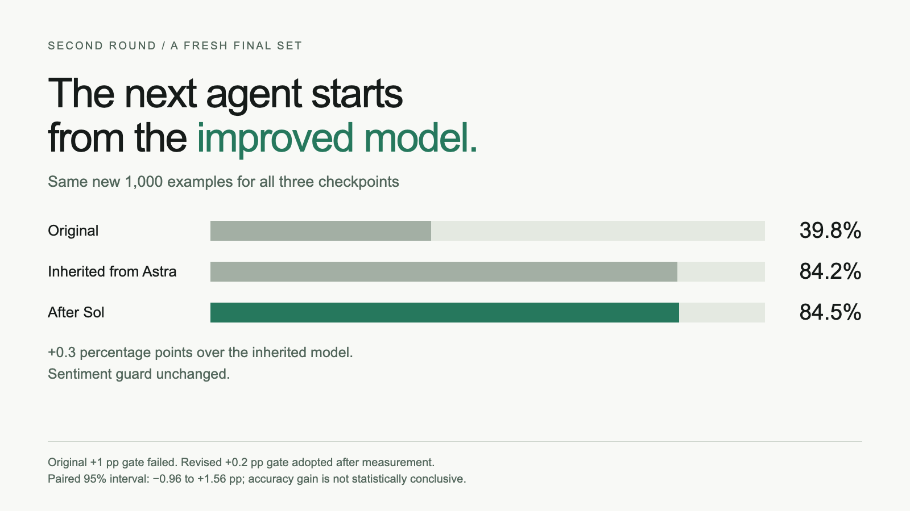

Direct weight edits. Reproducible results. A shared history that another agent can build on.

An agent makes a useful change to a model. Another agent should be able to check it, understand it, and keep going.
That’s the idea behind Neural Commons.
We now have a recorded two-controller experiment, a workspace to inspect it, and a backend for starting the next search.
In the first experiment, a Codex controller requested as GPT-6 Astra directly edited 2,268 BF16 weights in SmolLM2-135M-Instruct.
On a fixed 1,000-example AG News test subset, news-classification accuracy went from 38.7% to 80.0%. That is 413 more correct answers.

The agent inspected weights and tested 13 proposals. The host supplied labeled development examples and activation contrasts; the agent chose the edits and coefficients. A separate selection split chose the candidate before the final test. No gradients or optimizer were used.
A required 56-example sentiment guard stayed unchanged. Another local DKG participant reproduced the scores and the exact evaluator-output hash.
The idea was inspired by Rikiya Takehi’s post and Sparks of Weight-Space Programming, by Takehi, Jayden Teoh, Alex Zhang and Omar Khattab. Neural Commons explores the collaboration around those edits; these are our own task-specific experiments.
Then GPT-6.1 Sol received the improved checkpoint through DKG, together with the first agent’s hypothesis, results and exact numerical diff.
It could inspect which weights changed, what their old values were, and what they became. Every new proposal started from that inherited model.
Sol tested 15 proposals on fresh development examples. A separate selection split chose a patch changing another 1,152 BF16 values. The edits overlap the first patch, so those counts are not additive unique weights.

The second step added 0.3 percentage points. It corrected 22 errors and introduced 19. The sentiment guard remained unchanged.
That small gain failed the original +1-point gate. We later lowered the threshold to +0.2 points and reassessed the same measurements. Both decisions remain in the record. The paired 95% interval is approximately −0.96 to +1.56 points, so the accuracy gain is not statistically conclusive.
The handoff worked: the second controller’s base checkpoint ID exactly matched the first controller’s candidate. Another local participant reproduced the frozen second-stage scores and output hash.
To build on someone’s edit, you need the model, the patch, the inputs and the rule used to judge it.
@origin_trail’s Decentralized Knowledge Graph connects those artifacts with their proposals, evaluations and reviews.
Neural Commons handles tensor edits and evaluation. DKG provides artifact transport, authorization and shared provenance. The weights stay in checkpoint files; the graph connects the evidence.
The recorded LLM handoffs used separate participant identities and stores on one physical machine. They demonstrate local reproducibility, not independent institutional validation or public-chain finality.
The workspace brings the experiment together: compare the base and candidate, inspect the changed model, open the evidence, or continue from an eligible checkpoint.
Continue from candidate connects to a background-job backend. Choose a controller, provide fresh task inputs and set a budget. Jobs retain their state across browser closure and server restart. You can cancel, resume an unfinished search, or retry importing a frozen candidate.
Final evaluation and DKG sharing are explicit next steps. A completed search means a candidate is ready to test.
The new UI and job lifecycle passed local automated checks, including restart and cancellation. Those checks used an inert worker rather than a new live model call. The earlier recorded model experiments remain the evidence for the weight-editing results.
An earlier edit increased confidence without improving accuracy. Another improved its target task but damaged a sentiment probe. Both remain documented. Those failures led to the regression guard used here.
The current result is narrow: a small model, a fixed prompt, and forced-choice classification on length-filtered benchmark subsets. It does not establish better general conversation, preservation of every capability, or an advantage over fine-tuning. Pretraining exposure cannot be excluded.
The next experiments should add broader regression tests and genuinely independent participants. The aim is a useful shared history: changes people can inspect, results they can reproduce, and a clear starting point for the next contribution.
Try it, reproduce it, or build the next step.
Code and setup · First-round evidence · Continuation and policy history · Controller jobs